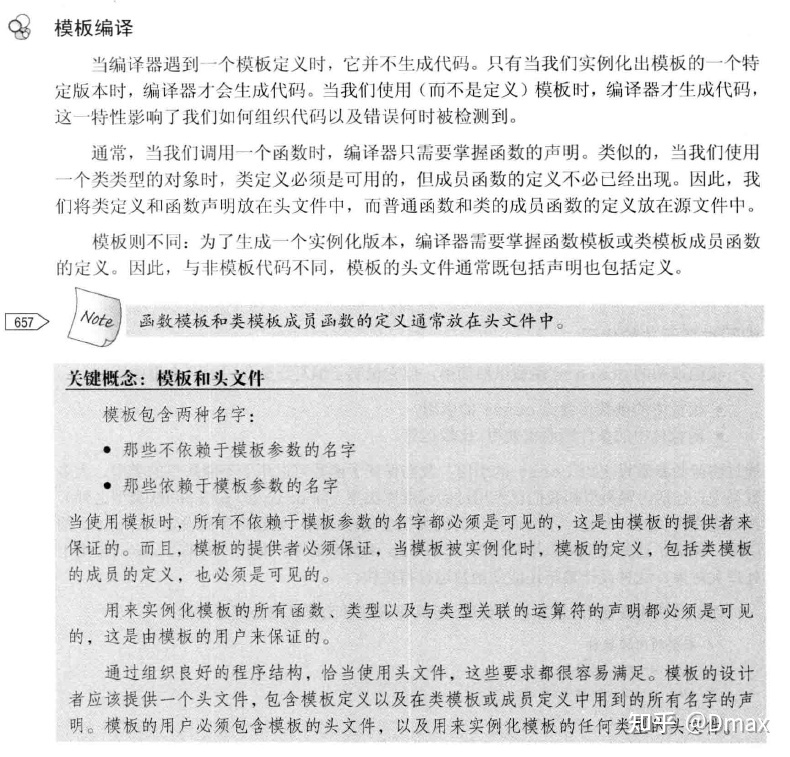

模板特化
背景：编写单一模板，使之对任何可能的模板实参都是最合适的，都能实例化，这并不总是能办到。当我们不能（或不希望）使用模板版本时，可以定义类或函数模板的一个特例化版本。
函数模板特化
举个例子，我们构造一个compare函数用于比较不同类型的大小，并重载了compare函数来处理字符串字面常量：
// 函数模板一: 可以比较任意两个类型
template <typename T> int compare(const T&, const T&); // #1
// 函数模板二: 处理字符串字面常量
template <size_t N, size_t M> int compare(const char(&)[N], const char(&)[M]); // #2需要注意的是，只有当我们传递给compare一个字符串字面常量或者一个数组时，编译器才会调用接收两个非类型模板参数的版本。如果我们传递给它字符指针，它就会调用第一个版本（因为我们无法将一个指针转换成一个数组的引用）：
const char *p1 = "tomo", *p2 = "cat";
compare(p1, p2); // 调用#1
compare("tomo", "cat"); // 调用#2为了处理字符指针（而不是数组），可以为第一个版本的compare定义一个模板特例化版本。当我们特例化一个函数模板时，必须为原模板中的每个模板参数都提供实参。为了指出我们正在实例化一个模板，应该使用关键字template后跟一个空尖括号对<>：
// 函数模板
template <typename T>
int compare(const T&, const T&);
// compare的特殊版本, 处理字符数组的指针
template <>
int compare(const char* const &p1, const char* const &p2) {
return strcmp(p1, p2);
}需要注意的是，一个特例化版本本质上是一个实例，而非函数名的一个重载版本。如果我们将接收字符指针的compare版本定义为一个普通的非模板函数（而不是函数模板的一个特例化版本），此调用的解析就会不同。在此情况下，将由三个可行的函数：两个模板和非模板的字符指针版本。
类模板特化
作为一个例子，我们为标准库hash模板定义一个特例化，可以用它来将Foo对象保存在无序容器中。默认情况下，无序容器使用hash<key_type>来组织其元素，为了让我们的数据类型也能使用这种默认组织方式，必须定义hash模板的一个特例化版本。一个hash类必须定义：
- 一个重载的调用运算符，它接受一个容器关键字类型的对象，返回一个
size_t - 两个类型成员，
result_type和argument_type，分别是调用运算符的返回类型和参数类型 - 默认构造函数和拷贝赋值运算符（可以隐式定义）
在定义此特例化版本的hash时，唯一复杂的地方是：必须在原模板定义所在的命名空间中特例化它。为了达到这一目的，首先必须打开命名空间：
struct Foo {
string str;
double d;
};
// 打开std命名空间, 以便特例化std::hash
namespace std {
template <> // 我们正在定义一个特例化版本, 模板参数为Foo
struct hash<Foo> {
// 用来散列一个无序容器的类型必须要定义下列类型
typedef size_t result_type;
typedef Foo argument_type;
size_t operator()(const Foo& foo) const;
// 我们的类使用合成的拷贝控制成员和默认构造函数
};
size_t hash<Foo>::operator()(const Foo& foo) const {
return hash<string>()(foo.str) ^
hash<double>()(s.d);
}
} // 关闭std命名空间, 注意右花括号之后没有分号Tips：为了让
Foo的用户能使用hash特例化版本，我们应该在Foo的头文件中定义该特例化版本。
成员函数模板，可以当成普通函数模板来处理，只是需要额外传入类模板参数：
// 定义Foo的构造函数, 接受两个迭代器表示要拷贝的元素范围
template <typename T> class Foo {
public:
template <typename It> Foo(It b, It e);
private:
std::shared_ptr<std::vector<T>> data_;
};
template <typename T>
template <typename It>
Foo<T>::Foo(It b, It e) : data_(std::make_shared<std::vector<T>>(b, e)) { }重载与特化
从编译到函数模板的调用，编译器必须在非模板重载、模板重载和模板重载的特化间决定。
template< class T > void f(T); // #1 ：模板重载
template< class T > void f(T*); // #2 ：模板重载
void f(double); // #3 ：非模板重载
template<> void f(int); // #4 ： #1 的特化
f('a'); // 调用 #1
f(new int(1)); // 调用 #2
f(1.0); // 调用 #3
f(1); // 调用 #4注意只有非模板和初等模板重载参与重载决议。特化不是重载，且不受考虑。只有在重载决议选择最佳匹配初等函数模板后，才检验其特化以查看何为最佳匹配。
template< class T > void f(T); // #1 ：所有类型的重载
template<> void f(int*); // #2 ：为指向 int 的指针特化 #1
template< class T > void f(T*); // #3 ：所有指针类型的重载
f(new int(1)); // 调用 #3 ，即使通过 #1 的特化会是完美匹配即重载的优先级要高于特化。
关于模板函数重载的更多内容，参考[function_template][1]。
模板偏特化
TIPS
我们只能偏特化类模板，而不能偏特化函数模板。
类模板偏特化之后仍然是一个模板，使用时需要提供特化后的模板实参。
举个例子，标准库remove_reference类型是一个模板类，它是通过一系列的特例化版本来完成其功能的：
// 原始的、最通用的版本
template <class T> struct remove_reference {
typedef T type;
};
// 部分特例化版本, 将用于左值引用和右值引用
template <class T> struct remove_reference<T&> {
typedef T type;
};
template <class T> struct remove_reference<T&&> {
typedef T type;
};
int i;
// decltype(42)为int, 使用原始模板
remove_reference<decltype(42)>::type a;
// decltype(i)为int&, 使用第一个(即T&)部分特例化版本
remove_reference<decltype(i)>::type b;
// decltype(std::move(i))为int&&, 使用第二个(即T&&)部分特例化版本
remove_reference<decltype(std::move(i))>::type c;#include <iostream>
#include <string>
using std::cout, std::endl, std::string;
template<typename T>
class Executor; // declaration
template<typename R, typename... Args>
class Executor<R(Args...)> // partial specification
{
private:
using FunctionType = R (*)(Args...);
FunctionType const func_;
int count_ {0};
public:
Executor(FunctionType f): func_(f) {}
R execute(Args ...args) // hook function
{
++count_;
return func_(args...);
}
[[nodiscard]] int CallCount() const { return count_; }
};
int read(int i, float f, double d)
{
cout << i << f << d << endl;
return i;
}
int main()
{
auto executor = Executor<decltype(read)>(read);
executor.execute(3, 4.4f, 5.5);
executor.execute(4, 5, 6);
cout << "\n exe count=" << executor.CallCount() << endl;
return 0;
}模板编译

模板类的声明和实现需要放在一起，无法分开编译。See more in https://stackoverflow.com/a/2143606 see alse https://isocpp.org/wiki/faq/templates#separate-template-fn-defn-from-decl-export-keyword
It is not possible to write the implementation of a template class in a separate cpp file and compile. All the ways to do so, if anyone claims, are workarounds to mimic the usage of separate cpp file but practically if you intend to write a template class library and distribute it with header and lib files to hide the implementation, it is simply not possible.
To know why, let us look at the compilation process. The header files are never compiled. They are only preprocessed. The preprocessed code is then clubbed with the cpp file which is actually compiled. Now if the compiler has to generate the appropriate memory layout for the object it needs to know the data type of the template class.
Actually it must be understood that template class is not a class at all but a template for a class the declaration and definition of which is generated by the compiler at compile time after getting the information of the data type from the argument. As long as the memory layout cannot be created, the instructions for the method definition cannot be generated. Remember the first argument of the class method is the ‘this’ operator. All class methods are converted into individual methods with name mangling and the first parameter as the object which it operates on. The ‘this’ argument is which actually tells about size of the object which incase of template class is unavailable for the compiler unless the user instantiates the object with a valid type argument. In this case if you put the method definitions in a separate cpp file and try to compile it the object file itself will not be generated with the class information. The compilation will not fail, it would generate the object file but it won't generate any code for the template class in the object file. This is the reason why the linker is unable to find the symbols in the object files and the build fails.
分离编译为什么不行：因为在编译实现模板的那个cpp文件时，如果该cpp文件中没有显示使用到模板的某个实例化版本，那么，编译器不会为模板的实现生成代码，它也不知道怎么生成。（因为模板参数不知道，你说其他文件中传了？抱歉，c++是一个文件一个文件编译，编一个丢一个的。你想的那些依赖关系都是交给链接器去做的，所以链接器找不到模板定义。）
参考这里。
Why can’t I separate the definition of my templates class from its declaration and put it inside a .cpp file?
In order to understand why things are the way they are, first accept these facts:
- A template is not a class or a function. A template is a “pattern” that the compiler uses to generate a family of classes or functions.
- In order for the compiler to generate the code, it must see both the template definition (not just declaration) and the specific types/whatever used to “fill in” the template. For example, if you’re trying to use a
Foo<int>, the compiler must see both theFootemplate and the fact that you’re trying to make a specificFoo<int>. - Your compiler probably doesn’t remember the details of one
.cppfile while it is compiling another.cppfile. It could, but most do not and if you are reading this FAQ, it almost definitely does not. BTW this is called the “separate compilation model.”
Now based on those facts, here’s an example that shows why things are the way they are. Suppose you have a template Foo defined like this:
template<typename T>
class Foo {
public:
Foo();
void someMethod(T x);
private:
T x;
};Along with similar definitions for the member functions:
template<typename T>
Foo<T>::Foo()
{
// ...
}
template<typename T>
void Foo<T>::someMethod(T x)
{
// ...
}Now suppose you have some code in file Bar.cpp that uses Foo<int>:
// Bar.cpp
void blah_blah_blah()
{
// ...
Foo<int> f;
f.someMethod(5);
// ...
}Clearly somebody somewhere is going to have to use the “pattern” for the constructor definition and for the someMethod() definition and instantiate those when T is actually int. But if you had put the definition of the constructor and someMethod() into file Foo.cpp, the compiler would see the template code when it compiled Foo.cpp and it would see Foo<int> when it compiled Bar.cpp, but there would never be a time when it saw both the template code and Foo<int>. So by rule #2 above, it could never generate the code for Foo<int>::someMethod()
留意由于模板造成的代码膨胀
如下代码中，由于Method1和Method2都是虚函数，c++编译器无法知道Bar<int>::Method1是否会被调用，因此必须要为它生成代码。随着虚函数的增多，以及模板实例的增多，代码就会以两者乘积的速度膨胀。在书写模板类时，应留意这种情况。
class Foo {
public:
virtual size_t Method1() = 0;
virtual size_t Method2() { return 0; }
};
template<typename T>
class Bar : public Foo {
public:
size_t Method1() override { return sizeof(T); }
size_t Method2() override { return sizeof(T) * 2; }
};
Bar<int> x; // 生成一份 Method1<int> 和 Method2<int>
Bar<std::string> y; // 生成一份 Method1<string> 和 Method2<string>留意不依赖模板参数的成员是否合理
模板类的所有成员（包括内部类）都应该对模板参数有依赖，否则考虑是否移到模板外边。
如下代码中，Result类型实际上不依赖模板参数T，却被放在了模板类Foo中。使得Foo<int>::Result和Foo<string>::Result是不同的类型。可以考虑在类外或者基类中定义Result类型。
template<typename T>
class Foo {
public:
enum class Result { SUCCESS, FALIURE };
Result DoSomething(const T obj);
};类型推导的工具
template <class T, T v>
struct integral_constant {
static const T value = v;
typedef T value_type;
typedef integral_const type;
}它将一个值T v唯一地映射到一个类型integral_constant<T, v>，然后在这个类型里，我们可以通过value取回那个值；我们还可以通过value_type取回那个值地类型。这样，我们就建立了从类型到值得一一映射。
在模板元编程中，使用类型要比使用值方便很多。使用值，你得明确规定值的类型；使用类型，你直接写typename就完事儿了，不需要提供更多信息，它可以是任意类型。
使用代表值的类型要比使用值更方便。
重载决议的过程
- 根据名称找出所有使用的函数和函数模板
- 对于使用的函数模板，要根据实际情况对模板形参进行替换
- 替换过程中如果发生错误，这个模板会被丢弃（SFINAE：Substitution Failure Is Not An Error.）
- 在上面两步生成的可行函数集合中，编译器会寻找一个最佳匹配，产生对该函数的调用
- 如果没有找到最佳匹配，或者找到多个匹配成都相当的函数，则编译器需要报错
函数模板的返回值
函数模板可以自动推导形参模板类型，但不能推导返回值类型，因此，需要显示指定返回值的模板形参类型，否则编译报错。
template <typename T1, typename T2, typename T3>
T3 add(T1 x, T2 y)
{
return x + y;
}
double x = add(1, 2.2f); // 错误，没有指定返回值模板形参类型
double x = add<int, float, double>(1, 2.2f); // 正确，指定了返回值模板形参类型T3=double注意上面的例子中，为了指定T3的类型，必须依次指定T1，T2的类型。